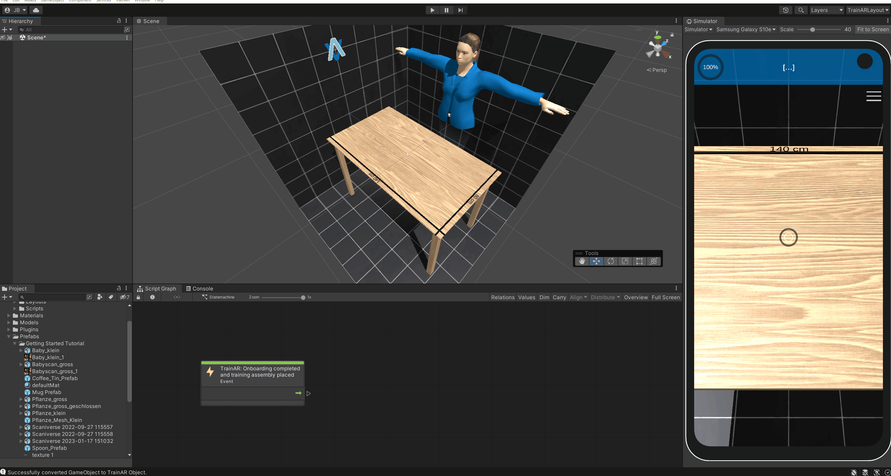

Creating and Converting TrainAR Objects
To be able to use 3D assets/models for interactions in TrainAR trainings, you need to convert them to TrainAR Objects first. This gives them default TrainAR functionality/behaviours and makes them usable in the TrainAR Stateflow.
To convert a 3D model into a TrainAR Object, simply drag-and-drop it from the project tab into the hierarchy tab. Then right click on it in the hierarchy tab and select Convert to TrainAR Object. If the 3D model you're trying to convert is packed as a so-called "Prefab" (this is the case if they appear blue in the Hierarchy), you'll also have to "Unpack Completely" it first. This is often the case for 3D models from the Unity Assetstore. 3D models from 3D scanners or third-party 3D model libraries are rarely packed as Prefabs.

Note: An object may only be converted to a TrainAR Object, if was not already converted and it has a Transform, MeshFilter and a MeshRenderer applied to it. SkinnedMeshRenderers are currently not supported.
Object States
A TrainAR Object has certain state attributes with which you can control in which kinds of ways the object can be interacted with. These states are:
Visible: Whether or not this TrainAR Object is visible or invisible.
Grabbable: If this is enabled, objects may be grabbed and moved around by the user. Therefore this should be disabled, in case of stationary objects.
Interactable: Whether or not it is possible to trigger interactions on this object.
Combineable: Whether or not it is possible to combine other TrainAR objects with it.
If you have selected a TrainAR Object in the Authoring Tool, you can alter the state TrainAR objects start the training with by clicking on them in the Object State Toolbar. Note: You can also change TrainAR object states during the training through the Object Helper Node in the TrainAR Stateflow.

Transform Tools
With the Transform Tools you can configure your TrainAR Objects further. For example, you can move, rotate, or scale objects and alter their Bounding Box.

The Transform tool is a convenient combination of the previous tools.

With the Bounding Box Tool you can configure the bounding box of the object, which among other things, defines at what point TrainAR Objects are overlapping, so they can be combined with each other.
Tip: Holding alt and clicking pins the center in place and clicking shift makes it possible to scale the bounding box uniformly.
Object-level Behaviours
Nothing to do here for now.
TrainAR Objects automatically inherit all necessary behaviours like physics, collisions, outlining, sounds, shadows, interactions and many more for TrainAR to work consistently. There might be cases where you want more than what is provided. E.g. playing a specific sound on a specific combination of two objects, outlining this specific object on selection in pink (for some reason) or showing a cat GIF when this object is interacted with. How to accomplish these object-level behaviours by listening to TrainAR Object interaction events is described in the Advanced Options.